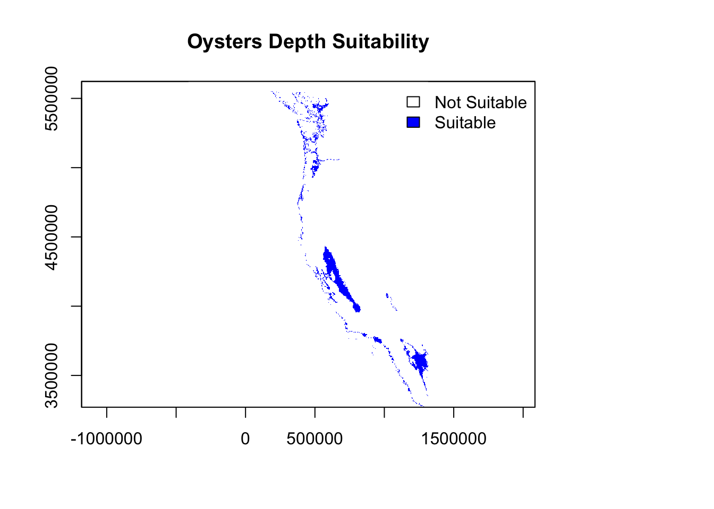
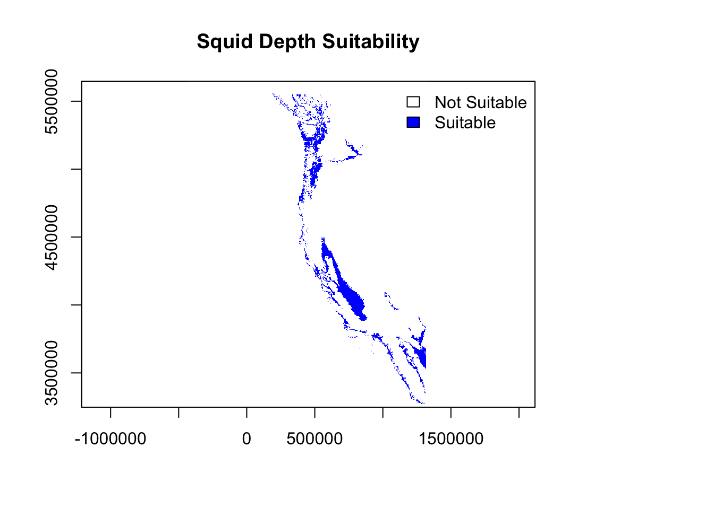

suppressMessages(library(here))
suppressMessages(library(terra))
suppressMessages(library(tidyverse))
suppressMessages(library(tmap))
suppressMessages(library(kableExtra))
suppressMessages(library(sf))EDS223-HW4
HW4: Prioritizing Potential Aquaculture
This document analyzes potential aquaculture regions based on sea surface temperature (SST) and depth constraints. We use oyster data as a case study and later generalize the workflow.
Load Packages
Load Data
set.seed(123)
# Load SST raster stack
sst_raster_stack <- rast(list.files(
path = here("data"),
pattern = "average_annual_sst_.*\\.tif$",
full.names = TRUE
))
# Load bathymetry raster
bathymetry_raster <- rast(here("data", "depth.tif"))
# Load EEZ shapefile
eez_shape <- vect(here("data", "wc_regions_clean.shp"))Data Preparation
Reproject Data
# Define UTM Zone 10N CRS
utm_crs <- "+proj=utm +zone=10 +datum=WGS84 +units=m +no_defs"
# Reproject datasets
sst_raster_projected <- project(sst_raster_stack, utm_crs)
bathymetry_projected <- project(bathymetry_raster, utm_crs)
eez_shape_projected <- project(eez_shape, utm_crs)Calculate Mean SST and Convert to Celsius
# Mean SST (2008-2012)
sst_mean <- mean(sst_raster_projected)
sst_mean_celsius <- sst_mean - 273.15 # Convert from Kelvin to CelsiusPrepare Depth Data
# Align bathymetry raster with SST extent and resolution
bathymetry_cropped <- crop(bathymetry_projected, ext(sst_mean_celsius))
bathymetry_resampled <- resample(bathymetry_cropped, sst_mean_celsius, method = "near")Suitability Analysis for Oysters
Reclassify SST and Depth
# Define suitability ranges for oysters
min_sst <- 11 # Minimum SST in Celsius
max_sst <- 30 # Maximum SST in Celsius
min_depth <- 0 # Minimum depth in meters
max_depth <- 70 # Maximum depth in meters
# SST suitability classification
sst_reclass_matrix <- matrix(
c(-Inf, min_sst, 0, min_sst, max_sst, 1, max_sst, Inf, 0),
ncol = 3, byrow = TRUE
)
sst_suitability <- classify(sst_mean_celsius, rcl = sst_reclass_matrix)
# Depth suitability classification
depth_reclass_matrix <- matrix(
c(-Inf, min_depth, 0, min_depth, max_depth, 1, max_depth, Inf, 0),
ncol = 3, byrow = TRUE
)
depth_suitability <- classify(bathymetry_resampled, rcl = depth_reclass_matrix)Zonal Analysis
# Combine SST and Depth suitability
combined_habitat_suitability <- sst_suitability * depth_suitability
# Rasterize EEZ shapefile for zonal analysis
eez_raster <- rasterize(eez_shape_projected, combined_habitat_suitability, field = "rgn_id")
# Summarize total suitable area by EEZ region
habitat_suitability_by_eez <- zonal(combined_habitat_suitability, eez_raster, fun = "sum", na.rm = TRUE)
# Rename columns for clarity
colnames(habitat_suitability_by_eez) <- c("region_id", "total_suitable_area")Visualize Suitability
# SST Suitability Map
plot(sst_suitability, main = "SST Suitability", col = c("white", "darkgreen"))
# Depth Suitability Map
plot(depth_suitability, main = "Depth Suitability", col = c("white", "blue"))
# Combined Suitability Map
plot(combined_habitat_suitability, main = "Combined Habitat Suitability", col = c("white", "red"))#plot(eez_shape_projected, add = TRUE, border = "black", lwd = 0.1)
print("Zonal Analysis Results:")[1] "Zonal Analysis Results:"print(habitat_suitability_by_eez) region_id total_suitable_area
1 1 2
2 2 0
3 3 5
4 4 5
5 5 0General Function for Suitability Analysis
calculate_habitat_suitability <- function(sst_stack, bathymetry, eez_shapefile,
sst_min, sst_max, depth_min, depth_max, species_name) {
# Reproject data to UTM Zone 10N CRS
utm_crs <- "+proj=utm +zone=10 +datum=WGS84 +units=m +no_defs"
sst_projected <- project(sst_stack, utm_crs)
bathymetry_projected <- project(bathymetry, utm_crs)
eez_projected <- project(eez_shapefile, utm_crs)
# Calculate mean SST and convert to Celsius
sst_mean <- mean(sst_projected)
sst_celsius <- sst_mean - 273.15
# Crop and resample bathymetry raster
bathymetry_cropped <- crop(bathymetry_projected, ext(sst_celsius))
bathymetry_resampled <- resample(bathymetry_cropped, sst_celsius, method = "near")
# Reclassify SST suitability
sst_reclass <- matrix(
c(-Inf, sst_min, 0, sst_min, sst_max, 1, sst_max, Inf, 0),
ncol = 3, byrow = TRUE
)
sst_suitability <- classify(sst_celsius, rcl = sst_reclass)
# Reclassify depth suitability
depth_reclass <- matrix(
c(-Inf, depth_min, 0, depth_min, depth_max, 1, depth_max, Inf, 0),
ncol = 3, byrow = TRUE
)
depth_suitability <- classify(bathymetry_resampled, rcl = depth_reclass)
# Combine SST and depth suitability
combined_suitability <- sst_suitability * depth_suitability
# Perform zonal analysis
eez_raster <- rasterize(eez_projected, combined_suitability, field = "rgn_id")
zonal_results <- zonal(combined_suitability, eez_raster, fun = "sum", na.rm = TRUE)
# Rename columns for clarity
colnames(zonal_results) <- c("region_id", "total_suitable_area")
# Plot SST Suitability
plot(
sst_suitability,
main = paste(species_name, "SST Suitability"),
col = c("white", "darkgreen"),
legend.args = list(text = "Suitability", side = 4, line = 2.5)
)
# Plot Depth Suitability
plot(
depth_suitability,
main = paste(species_name, "Depth Suitability"),
col = c("white", "blue"),
legend.args = list(text = "Suitability", side = 4, line = 2.5)
)
# Plot Combined Suitability
plot(
combined_suitability,
main = paste(species_name, "Combined Suitability"),
col = c("white", "red"),
legend.args = list(text = "Suitability", side = 4, line = 2.5)
)
#plot(eez_projected, add = TRUE, border = "black", lwd = 0.1)
# Print and return results
print(paste(species_name, "Habitat Suitability Results:"))
print(zonal_results)
return(zonal_results)
}# Parameters for Squid
species_name <- "Squid"
suitable_sst_min <- 8 # Minimum SST for squid
suitable_sst_max <- 13 # Maximum SST for squid
suitable_depth_min <- 20 # Minimum depth for squid
suitable_depth_max <- 180 # Maximum depth for squid
# Run Suitability Function
squid_suitability <- calculate_habitat_suitability(
sst_stack = sst_raster_stack,
bathymetry = bathymetry_raster,
eez_shapefile = eez_shape,
sst_min = suitable_sst_min,
sst_max = suitable_sst_max,
depth_min = suitable_depth_min,
depth_max = suitable_depth_max,
species_name = species_name
)Warning in plot.window(...): "legend.args" is not a graphical parameterWarning in plot.xy(xy, type, ...): "legend.args" is not a graphical parameterWarning in title(...): "legend.args" is not a graphical parameter
Warning in plot.window(...): "legend.args" is not a graphical parameterWarning in plot.xy(xy, type, ...): "legend.args" is not a graphical parameterWarning in title(...): "legend.args" is not a graphical parameter
Warning in plot.window(...): "legend.args" is not a graphical parameterWarning in plot.xy(xy, type, ...): "legend.args" is not a graphical parameterWarning in title(...): "legend.args" is not a graphical parameter[1] "Squid Habitat Suitability Results:"
region_id total_suitable_area
1 1 0
2 2 0
3 3 3
4 4 0
5 5 2Reflection
This assignment demonstrates the critical workflow for analyzing potential aquaculture zones. The general function provides flexibility for analyzing other species with different environmental constraints.